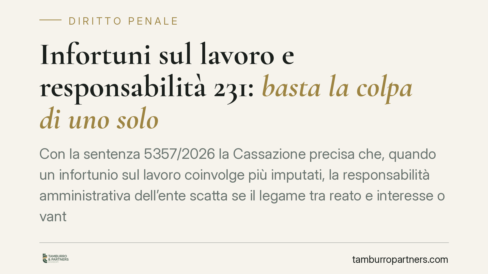

Infortuni sul lavoro e responsabilità 231: basta la colpa di uno solo
Con la sentenza 5357/2026 la Cassazione precisa che, quando un infortunio sul lavoro coinvolge più imputati, la responsabilità amministrativa dell'ente scatta se il legame tra reato e interesse o vantaggio aziendale è accertato anche in capo a un solo autore. Basta, ad esempio, un preposto che rimuove le protezioni per accelerare la produzione. Una decisione che allarga il perimetro del rischio d'impresa.

Il caso deciso dalla Corte
La Corte di Cassazione, con la sentenza n. 5357/2026, torna su un tema centrale per chi organizza il lavoro: la responsabilità dell'ente per gli infortuni. Il punto affrontato riguarda le situazioni in cui più persone sono imputate per lo stesso evento lesivo. La domanda è concreta: l'azienda risponde solo se tutti hanno agito nel suo interesse, o è sufficiente che lo abbia fatto uno soltanto?
La risposta della Corte è netta. Per configurare la responsabilità amministrativa dell'ente non serve che il criterio dell'interesse o del vantaggio ricorra per ciascun autore del reato. È sufficiente che sia accertato anche in capo a un solo soggetto. Nel caso esaminato, il legame è stato individuato nella condotta di un preposto che aveva rimosso i dispositivi di protezione per velocizzare la produzione.
Inquadramento normativo
Il riferimento è il D.lgs. 231/2001, che disciplina la responsabilità amministrativa degli enti derivante da reato. L'articolo 5 stabilisce che l'ente risponde per i reati commessi nel suo interesse o a suo vantaggio da soggetti in posizione apicale (dirigenti, amministratori) o da persone sottoposte alla loro direzione.
Due precisazioni utili. L'interesse guarda alla finalità della condotta al momento del fatto: si agisce per favorire l'ente. Il vantaggio guarda invece al risultato oggettivo: l'ente ne trae un beneficio concreto, tipicamente un risparmio di tempo o di costi. Nei reati colposi come gli infortuni, la giurisprudenza aggancia questi criteri non all'evento lesivo in sé, ma alla condotta che viola le norme di prevenzione: risparmiare sulla sicurezza per aumentare la produttività.
L'articolo 6 completa il quadro. L'ente può andare esente da responsabilità se dimostra di aver adottato ed efficacemente attuato, prima del fatto, un modello di organizzazione e gestione idoneo a prevenire reati di quella specie, affidandone la vigilanza a un organismo dotato di autonomi poteri.
Implicazioni pratiche
La pronuncia sposta l'asticella del rischio. Finora poteva sembrare che la responsabilità dell'ente presupponesse una convergenza di condotte tutte orientate al suo tornaconto. La Corte chiarisce che così non è: basta un anello della catena.
Questo significa che anche l'iniziativa di un singolo preposto o caporeparto, magari non concordata con i vertici e adottata per ragioni pratiche di reparto, può innescare la sanzione a carico dell'intera società. Il risparmio di tempo che quel gesto produce per l'azienda è sufficiente a radicare il vantaggio richiesto dalla norma.
Per le imprese, la conseguenza è duplice. Sul piano difensivo, non ci si può appellare al fatto che gli altri imputati agissero per finalità personali. Sul piano preventivo, cresce il peso del modello organizzativo: è lo strumento con cui l'ente può dimostrare di aver fatto quanto ragionevolmente esigibile per impedire condotte come la rimozione delle protezioni.
È un messaggio diretto anche alla filiera intermedia. Preposti e caporeparto non sono figure marginali nella logica della 231: le loro scelte operative entrano nel calcolo della responsabilità dell'ente.
Cosa fare in concreto
- Verificate il modello organizzativo 231: controllate che esista, che sia aggiornato e che copra in modo specifico i reati in materia di salute e sicurezza. Un modello formale ma inattuato non protegge.
- Formalizzate le procedure sulle protezioni: mettete per iscritto il divieto di rimuovere o disattivare dispositivi di sicurezza e prevedete controlli documentati sul rispetto della regola.
- Coinvolgete i preposti: formate e responsabilizzate chi dirige i reparti, perché è proprio a questo livello che nascono le condotte più insidiose per l'ente.
- Rafforzate l'organismo di vigilanza: assicuratevi che abbia poteri reali, risorse e flussi informativi effettivi, così da poter intercettare le prassi pericolose prima dell'infortunio.
- Documentate tutto: audit, segnalazioni, interventi correttivi. In sede processuale, la prova dell'efficace attuazione del modello passa dalle carte.
La sentenza conferma una tendenza: la sicurezza sul lavoro non è più solo un tema di conformità formale, ma un fattore che incide direttamente sull'esposizione sanzionatoria dell'impresa. Consigliamo di trattarla come un presidio organizzativo continuo, non come un adempimento una tantum.
---
Contributo informativo a cura di Tamburro & Partners - Avv. Giuseppe Tamburro. Non costituisce parere legale.
Ogni condominio ha una storia a sé.
Se gestisci un'amministrazione e vuoi un confronto su una specifica questione condominiale, scrivi allo studio. Ti rispondiamo entro un giorno lavorativo.